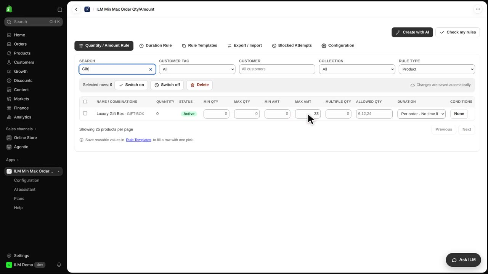
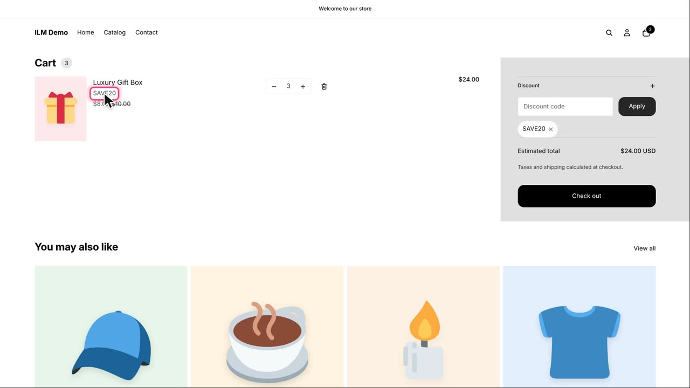
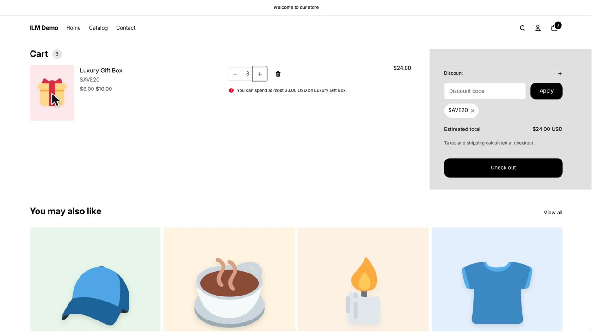
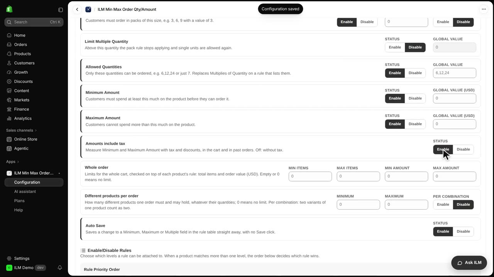
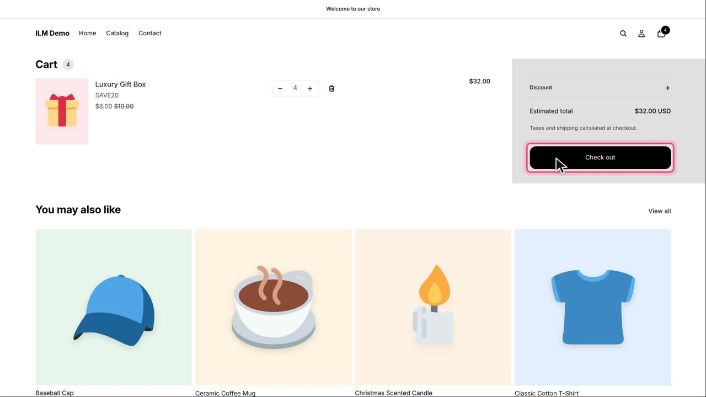

This switch decides which amount the Minimum and Maximum Amount limits measure: the price before discounts, or what the shopper really pays. Our Luxury Gift Box costs ten, and a shopper may spend at most thirty-three on it. Today we will see how the same cart is refused before the switch and allowed after it.
Here is the Luxury Gift Box rule: Max Amt thirty-three. That means a shopper can buy up to thirty-three dollars worth of this product in one order.

The shopper has three boxes in the cart and enters the discount code SAVE20, twenty percent off. The cart now shows the discount applied.

Now the shopper changes the cart to four boxes. Before the discount, that is forty, so it is refused, even though the shopper would only pay thirty-two after the discount.

In Configuration, find Amounts include tax, and click Enable. Now the limits measure the amount after discounts, and with tax when your prices include tax.

The same change works now: four boxes cost thirty-two after the discount, under thirty-three, so the cart is allowed and the shopper can continue to checkout.
